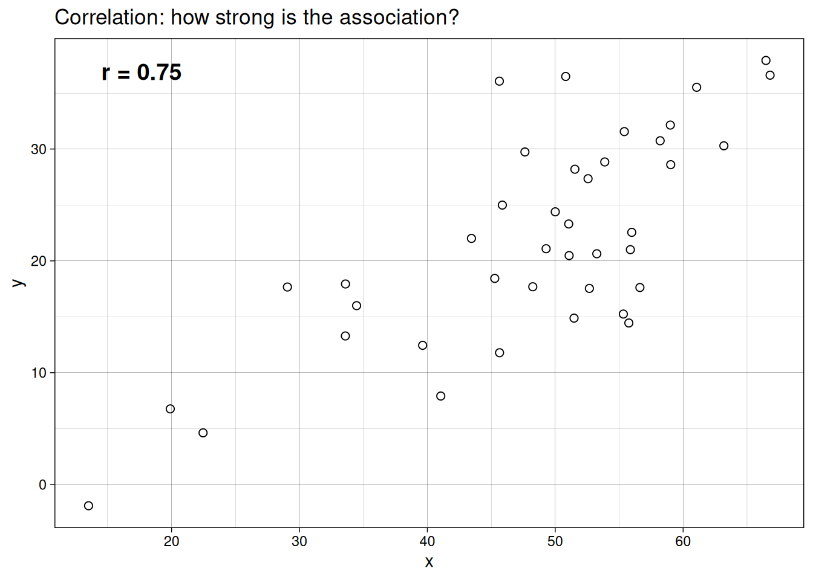
Introduction
In the previous modules, we focused on comparing means across qualitative treatments.
- In modules 4 and 5, we compared two populations.
- In modules 6 through 8, we compared multiple qualitative treatments.
- In module 9, we discussed what to do when assumptions are not well behaved.
The same assumptions apply in regression. The difference is not in the assumptions, but in how we model the mean: instead of a group mean, we use a continuous function of \(x\). Let’s keep that continuity in mind throughout this module.
In this module, we move to a different kind of question.
Instead of comparing only treatment groups identified by names (hybrid A, fungicide B, treatment C), we now study relationships between quantitative variables.
This is the big shift for units 10 and 11. In previous modules, treatments were categorical: hybrids, fungicides, or herbicides with names and labels. Those are different categories, but they are not naturally arranged on a numeric scale. Here, we move to variables like nitrogen rate, seed population, and canopy temperature. Because those are numerical and ordered, we can ask a different question: not just “are these groups different,” but “how much does \(y\) change as \(x\) changes,” and what do we predict between observed values?
Examples include:
- nitrogen rate and yield
- plant biomass and fruit count
- canopy temperature and grain moisture
This module introduces two related but different tools:
- correlation: measures association
- simple linear regression: models how one variable changes as another changes
Correlation versus Regression
When we analyze two quantitative variables, the first practical question is:
Are we only describing association, or are we modeling a directional relationship?
The clearest way to see the difference is visually. Both plots below use the same example dataset. In one, we only summarize association. In the other, we fit a directional model.
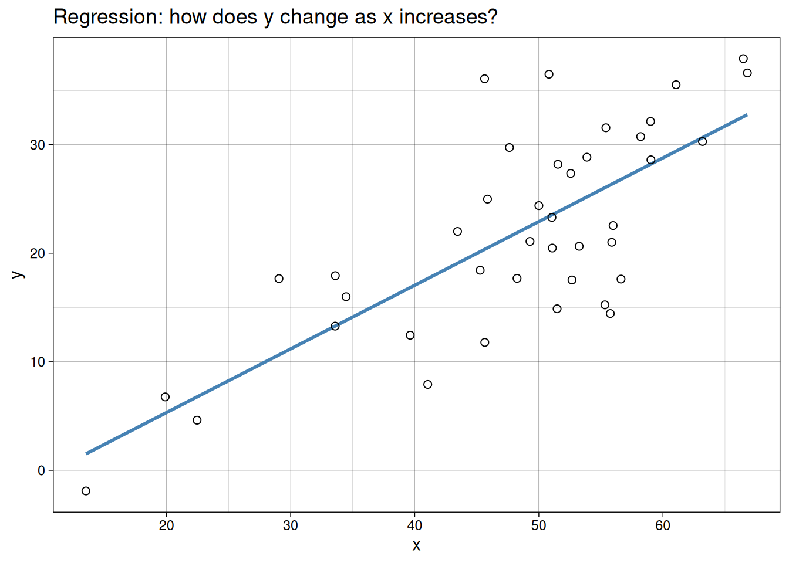
Correlation
Correlation measures the strength and direction of association between variables, usually represented as \(r\).
- \(r\) ranges from -1 to 1
- values near 1 indicate a strong positive association
- values near -1 indicate a strong negative association
- values near 0 indicate weak or no linear association
A key point:
Correlation does not imply causation.
One important limitation: \(r\) only measures linear association. A strong curved relationship can still produce a low correlation coefficient because the two halves of the curve partially cancel each other out. Similarly, a single outlier can inflate \(r\) substantially. This means a high \(r\) alone is not enough. Always plot the data first.
The example below illustrates this. Despite a strong, clear relationship between \(x\) and \(y\), the correlation coefficient is near zero because the curve is symmetric and the linear component cancels out.
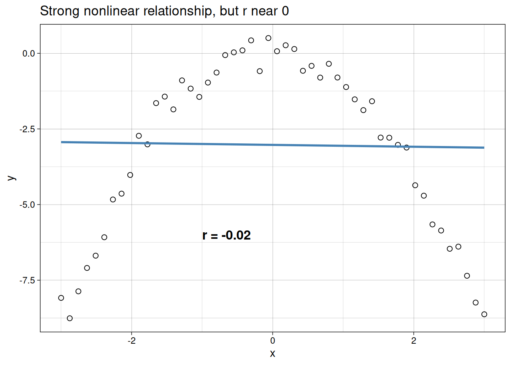
Regression
Simple linear regression is used when we want to model how a response variable \(y\) changes with an explanatory variable \(x\).
In plain terms, regression lets us do three practical things:
- test whether \(x\) is related to \(y\)
- estimate the size of that relationship
- predict \(y\) for values of \(x\) within the observed range
Case Study 1: Cucumber Traits
An agronomist conducted a greenhouse experiment to understand the relationship between plant architecture and early productivity in cucumber. She grew 60 plants from the same seed lot under identical conditions and, at the flowering stage, harvested and dissected each plant to count:
- number of main stem branches
- total number of leaves
- number of fruits that had set by the flowering stage (“early fruits”)
Her goal was to identify which traits correlate with early fruiting, which might help her breed for faster-producing varieties.
Here are the first few rows of the resulting dataset:
branches leaves earlyfruit
1 76 572 15
2 78 482 21
3 50 382 19
4 53 500 14
5 83 641 20
6 80 825 18Let us first visualize branches versus leaves.
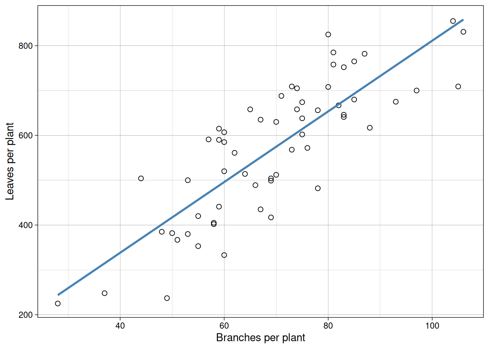
Now branches versus early fruit.
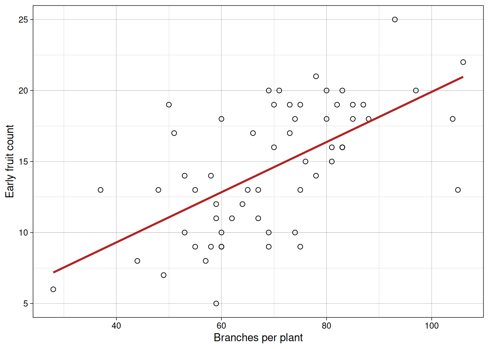
In both plots, we see positive association. But this alone does not tell us whether one variable causes the other.
For example, do more branches enable more leaves to form, or does more active photosynthesis from abundant leaves fuel branch growth? Similarly, in indeterminate crops like tomatoes or soybeans, branches and fruits compete for the same carbohydrates, making the causal direction ambiguous. It’s also possible that a third variable, like total plant vigor, drives both branches and fruits upward independently. Correlation alone cannot resolve these questions.
Measuring correlation with \(r\)
cor(cucumber$branches, cucumber$leaves)[1] 0.8221879cor(cucumber$branches, cucumber$earlyfruit)[1] 0.6157407That gives us a quick numerical summary of linear association strength.
What does \(r\) measure?
One way to think about \(r\) is that it takes covariance and puts it on a common scale.
\[ r = \frac{\mathrm{cov}(x, y)}{s_x s_y} \]
- \(\mathrm{cov}(x, y)\) captures how \(x\) and \(y\) vary together
- \(s_x\) and \(s_y\) scale by the variability of each variable
That scaling step is why \(r\) always stays between -1 and 1.
You do not need to memorize the formula. What matters most is:
- sign of \(r\) gives direction of association
- magnitude of \(r\) gives strength of linear association
A geometric way to picture this: imagine centering both \(x\) and \(y\) around their means so the origin sits at \((\bar{x}, \bar{y})\). If points are aligned at approximately a 45-degree angle (northeast to southwest), their products accumulate with the same sign, driving \(r\) toward \(\pm 1\). If points scatter randomly across all quadrants, positive and negative products cancel out, pushing \(r\) toward 0. This is why the denominator (which measures the maximum possible alignment) keeps \(r\) bounded between -1 and 1: it is scaling by the theoretical maximum covariance.
A natural bridge to regression is:
\[ \hat{\beta}_1 = r \cdot \frac{s_y}{s_x} \]
This tells us that slope depends on both the correlation between \(x\) and \(y\) and the scales of the two variables. Two datasets with the same \(r\) but different standard deviations will produce different slopes. Keeping this in mind helps avoid the common mistake of equating correlation magnitude with regression effect size.
A short “by hand” correlation example in R
Up to this point, we have mostly used cor(x, y) and taken the result at face value. That works perfectly fine, but it can feel a little like a black box.
So let’s slow down for a minute and actually see what is going on under the hood.
Suppose we have four paired observations:
x <- c(2, 4, 5, 7)
y <- c(3, 6, 7, 10)
xbar <- mean(x)
ybar <- mean(y)
xbar[1] 4.5ybar[1] 6.5First step: center both variables by subtracting their means. This just moves the data so that everything is measured relative to the average.
x_centered <- x - xbar
y_centered <- y - ybar
data.frame(x, y, x_centered, y_centered) x y x_centered y_centered
1 2 3 -2.5 -3.5
2 4 6 -0.5 -0.5
3 5 7 0.5 0.5
4 7 10 2.5 3.5Now here is the key idea.
- When \(x\) is above average and \(y\) is also above average → positive contribution
- When \(x\) is below average and \(y\) is also below average → also positive
- When one is above and the other is below → negative contribution
So what we do is multiply these centered values together and add them up.
numerator <- sum(x_centered * y_centered)
numerator[1] 18That gives us a measure of how the variables move together. But we are not done yet, because this value depends on the scale of the data.
To fix that, we divide by the variability in each variable.
denominator <- sqrt(sum(x_centered ^ 2) * sum(y_centered ^ 2))
denominator[1] 18.02776Now we put it all together:
r_manual <- numerator / denominator
r_manual[1] 0.9984604cor(x, y)[1] 0.9984604So this is all correlation is doing.
It is checking whether observations that are above average in \(x\) tend to line up with observations that are above average in \(y\), and the same for below-average values.
Once you see it this way, \(r\) stops being “just a number R gives you” and becomes a summary of how consistently the two variables move together.
Regression
Now we move from association to modeling a directional relationship.
Case Study 2: Nitrogen Rate and Corn Yield
A crop consultant evaluated corn’s response to nitrogen fertilization on a farmer’s field. The farmer was considering three fertilizer programs: no applied nitrogen (baseline), a moderate rate (about 34 lbs/acre), and a high rate (about 67 lbs/acre), each applied to four randomly selected plots. At harvest, the consultant measured grain yield (standardized to 15% moisture) from each plot.
The goal was to estimate the relationship between nitrogen rate and yield so the farmer could make an economically informed decision about the optimal application rate.
Here are the first few rows of the harvest results:
nitro yield
1 0.0 9.202734
2 0.0 9.264649
3 0.0 7.611941
4 0.0 7.784601
5 33.6 11.286116
6 33.6 11.078984
7 33.6 9.807396
8 33.6 10.236354
9 67.2 14.366580
10 67.2 12.344108
11 67.2 11.259943
12 67.2 12.665017First, we always inspect the data.
ggplot(nitrogen, aes(x = nitro, y = yield)) +
geom_point(pch = 21, size = 2.5) +
labs(x = "Nitrogen rate",
y = "Yield") +
theme_linedraw()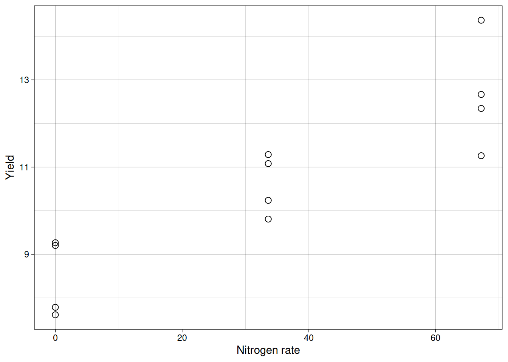
The center of the points appears to increase approximately linearly with nitrogen, so a simple linear model is reasonable as a first approach.
Connecting to previous linear models
This part is important: you have seen this model structure before. Since module 6, we have been using the same linear additive framework:
\[{Y_{ij} = \mu + \tau_i + \varepsilon_{ij}}\]
where \(\tau_i\) is a categorical treatment effect, a fixed shift in the mean for each group. When we called lm(yield ~ trt), R was fitting exactly this model.
Simple linear regression uses that same framework, with one key change: the predictor is continuous instead of categorical.
\[{Y_i = \beta_0 + \beta_1 x_i + \varepsilon_i}\]
Now \(\beta_1 x_i\) replaces \(\tau_i\): instead of a separate mean shift for each group, the mean shifts continuously and proportionally as \(x\) increases. The assumptions, the residual structure, and the hypothesis test are structurally identical.
The parallel with previous modules is:
- previous model: \(Y_{ij} = \mu + \tau_i + \varepsilon_{ij}\)
- current model: \(Y_i = \beta_0 + \beta_1 x_i + \varepsilon_i\)
- previous R call:
lm(yield ~ trt)andtrtis a categorical variable - current R call:
lm(yield ~ nitro)andnitrois a continuous variable - previous null hypothesis: all \(\tau_i = 0\)
- current null hypothesis: \(\beta_1 = 0\)
So this is not a new statistical world. It is an extension of the one you already know.
Linear equation
The regression equation is:
\[{\hat{y} = \hat{\beta}_0 + \hat{\beta}_1x}\]
Where:
- \(\hat{\beta}_0\) is the intercept
- \(\hat{\beta}_1\) is the slope
Interpretation:
- intercept: expected \(y\) when \(x = 0\)
- slope: expected change in \(y\) for each one-unit increase in \(x\)
The diagram below annotates the fitted line directly to make both terms concrete on the plot.
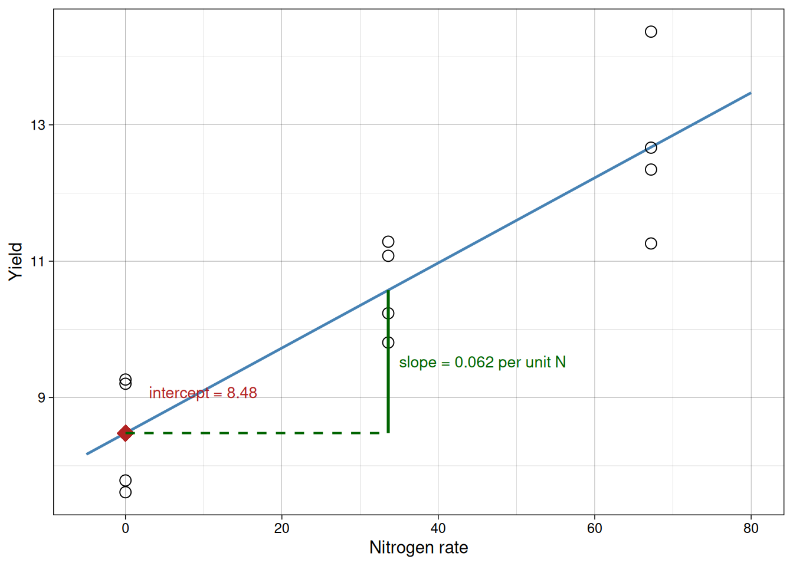
Model assumptions
For the usual inference from summary() to be reliable, we still need the same core assumptions:
- \(x\) is controlled by the researcher or measured with negligible error
- the random errors are independent and have a common variance
- the random errors are approximately normally distributed
- the straight-line model is the correct functional form
These are the same assumptions you already checked with residual plots in previous modules. The only difference is what we are modeling: instead of asking whether group means differ, we are asking whether a straight line captures how mean \(y\) changes as \(x\) changes.
One practical note on the intercept: interpreting \(\hat{\beta}_0\) as the expected response when \(x = 0\) only makes sense when \(x = 0\) is within or close to the observed range. If no observations were taken near zero, the intercept is a mathematical anchor that positions the line, not a directly interpretable quantity. In the nitrogen example this is not a problem, because zero nitrogen is a real experimental condition and within the observed range.
Fitting the model in R
model1 <- lm(yield ~ nitro, data = nitrogen)
summary(model1)
Call:
lm(formula = yield ~ nitro, data = nitrogen)
Residuals:
Min 1Q Median 3Q Max
-1.4122 -0.7130 -0.1676 0.7137 1.6944
Coefficients:
Estimate Std. Error t value Pr(>|t|)
(Intercept) 8.479237 0.428456 19.790 2.38e-09 ***
nitro 0.062395 0.009877 6.317 8.72e-05 ***
---
Signif. codes: 0 '***' 0.001 '**' 0.01 '*' 0.05 '.' 0.1 ' ' 1
Residual standard error: 0.9387 on 10 degrees of freedom
Multiple R-squared: 0.7996, Adjusted R-squared: 0.7796
F-statistic: 39.9 on 1 and 10 DF, p-value: 8.716e-05Worked interpretation example:
Suppose your model output shows an intercept near 8.5 and a slope near 0.05. A clear way to report that is: with zero nitrogen, expected yield is about 8.5 units, and each additional 1 unit of nitrogen is associated with an average increase of about 0.05 yield units. This does not mean every single observation increases by exactly 0.05. It means the average trend in the fitted line changes by that amount, while individual observations still vary around that trend due to residual variation.
Now we can overlay the fitted line.
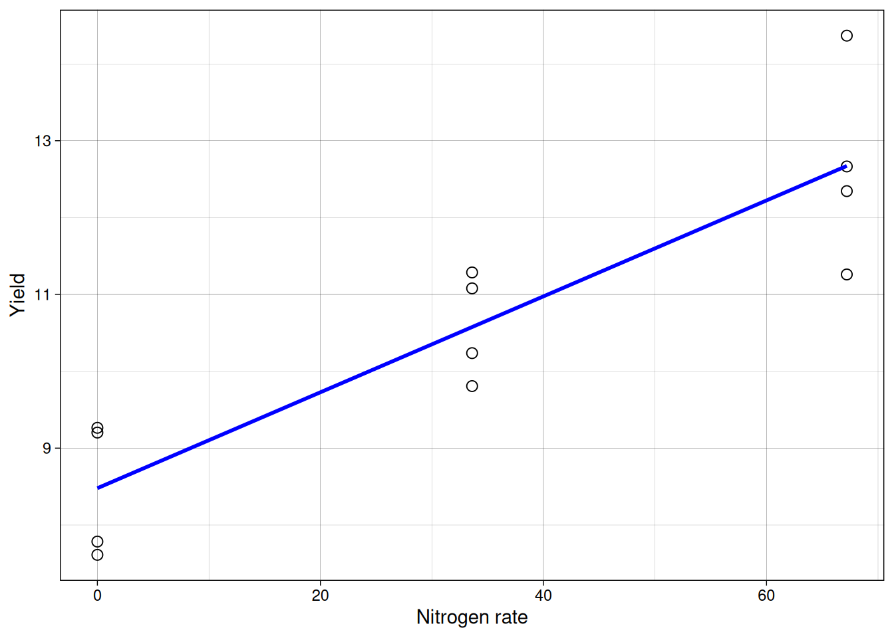
Interpreting coefficients
From the fitted model:
- the estimated intercept is the expected yield at zero nitrogen
- the estimated slope is how much yield changes per unit nitrogen
We can also make predictions for values inside the observed range (interpolation).
coef(model1)(Intercept) nitro
8.4792367 0.0623948 predict(model1, newdata = data.frame(nitro = c(15, 50))) 1 2
9.415159 11.598977 Least-squares idea
The fitted line is chosen by least squares: it minimizes the sum of squared residuals.
Residual for each point:
\[{residual_i = y_i - \hat{y}_i}\]
Least squares chooses coefficients that minimize:
\[{\sum (y_i - \hat{y}_i)^2}\]
The red segments in the plot below show each individual residual. The fitted line is the one position that makes the sum of squared segment lengths as small as possible.
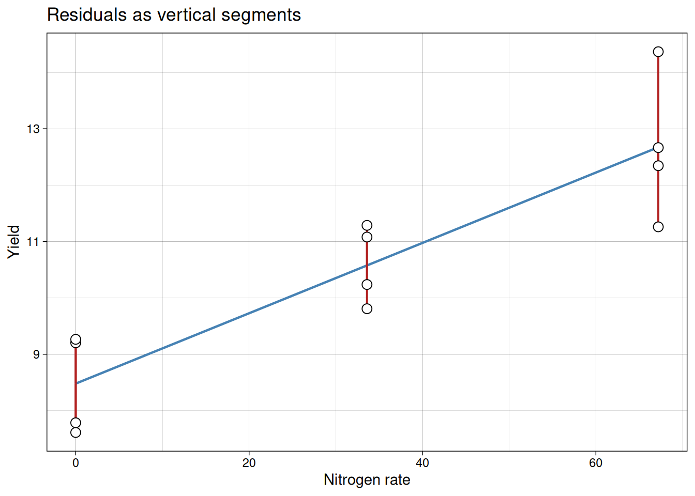
A quick visualization of Least-squares
This is a useful place to visualize how least squares chooses a slope.
Important note: this is not the algorithm R uses internally for lm(). R solves the normal equations analytically for this model class. We are doing this only as a conceptual visualization. In the full least-squares problem, both the intercept and slope are estimated simultaneously. Here, we fix the intercept only to simplify visualization and isolate how the slope affects the error.
From our fitted model, the intercept is about 8.48 and the slope is about 0.05. We will keep the intercept fixed at 8.48 and try several candidate slope values. For each slope, we compute the sum of squared errors (SSE).
Now we plot the SSE for each candidate slope value. This gives the characteristic U-shape, with the minimum at the least-squares estimate.
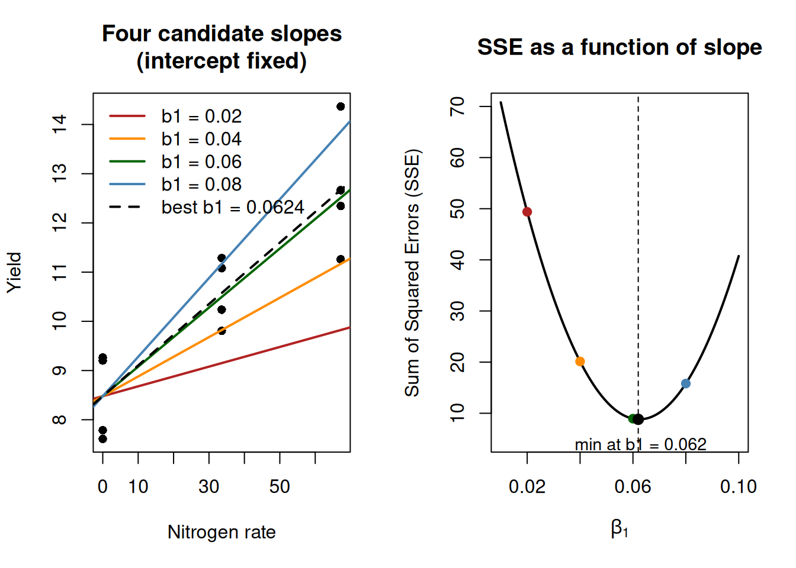
Significance of coefficients
In anova(model1), the p-value for the slope tests:
- \(H_0: \beta_1 = 0\)
- \(H_a: \beta_1 \ne 0\)
If the p-value is small (for example, \(< 0.05\)), we have evidence that the slope is not zero, so there is a meaningful linear trend between \(x\) and \(y\).
Analysis of variance for regression
You can also view the same model test through ANOVA.
anova(model1)Analysis of Variance Table
Response: yield
Df Sum Sq Mean Sq F value Pr(>F)
nitro 1 35.161 35.161 39.904 8.716e-05 ***
Residuals 10 8.812 0.881
---
Signif. codes: 0 '***' 0.001 '**' 0.01 '*' 0.05 '.' 0.1 ' ' 1For simple linear regression, this ANOVA test is equivalent to testing whether the slope differs from zero. So the logic is exactly the same as previous modules. The predictor changed from categorical to continuous, but the variation partition, F-statistic, and p-value interpretation follow the same workflow you already know.
Measuring fit with \(R^2\)
The model summary also reports \(R^2\).
- \(R^2\) is the proportion of variation in \(y\) explained by the fitted line
- values closer to 1 indicate better fit
- values near 0 indicate little explanatory value
A useful decomposition is:
\[{SST = SSR + SSE}\]
where:
- \(SST\) = total variation around the mean
- \(SSR\) = variation explained by the model
- \(SSE\) = residual (unexplained) variation
So:
\[{R^2 = \frac{SSR}{SST}}\]
In simple linear regression, \(R^2\) is also equal to the square of the Pearson correlation between observed and fitted values.
The short check below verifies this directly in R.
y_obs <- nitrogen$yield
y_hat <- fitted(model1)
SST <- sum((y_obs - mean(y_obs))^2)
SSR <- sum((y_hat - mean(y_obs))^2)
R2_manual <- SSR / SST
R2_corr <- cor(y_obs, y_hat)^2
c(R2_manual = R2_manual,
R2_corr = R2_corr,
R2_summary = summary(model1)$r.squared) R2_manual R2_corr R2_summary
0.7996138 0.7996138 0.7996138 Two cautions are worth keeping in mind:
- a high \(R^2\) does not prove the model is correct
- a modest \(R^2\) can still be scientifically useful in noisy biological systems if effect estimates are interpretable and diagnostics are acceptable
Checking model assumptions
Before trusting inferences and predictions, we inspect residuals.
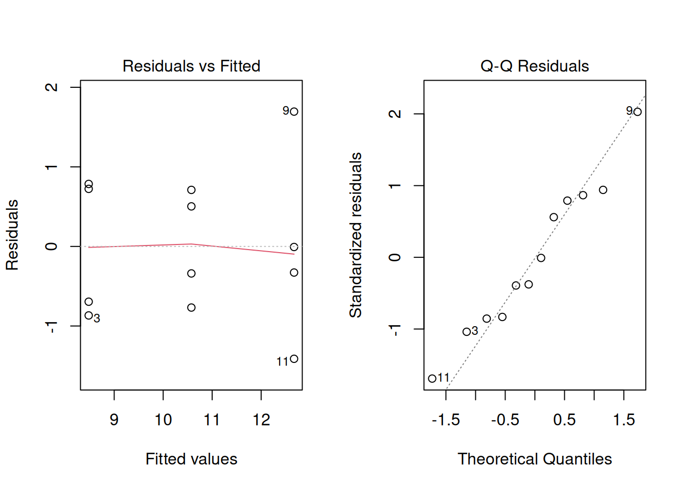
What we want to see:
- no strong curvature in residuals vs fitted
- no obvious funnel shape, which would indicate unequal variance across levels of \(x\)
- residuals approximately following a straight line in normal Q-Q plot
In this example, the data are clean and the diagnostics look reasonably well-behaved. In real experiments, however, the residual vs. fitted plot may reveal curvature (suggesting the relationship is not truly linear) or a funnel shape (suggesting unequal variance across \(x\)). In those cases, the transformation and GLM tools from Module 9 apply here exactly as they did for ANOVA. The diagnostic workflow is the same.
Reality check: fitting a line to curved data
To emphasize why diagnostics are not optional, imagine the same consultant had tested nine nitrogen rates instead of three. Perhaps a research institute encouraged her to run a more detailed trial to better characterize the response curve. Here is what a more thorough trial might show:
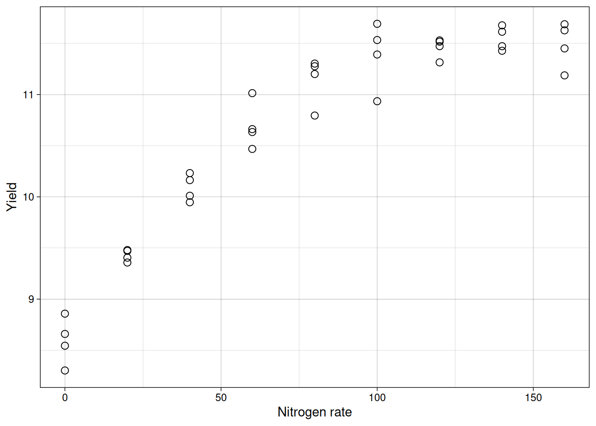
model_full <- lm(yield ~ nitro, data = nitrogen_full)
summary(model_full)
Call:
lm(formula = yield ~ nitro, data = nitrogen_full)
Residuals:
Min 1Q Median 3Q Max
-0.91983 -0.25513 -0.01393 0.30859 0.72249
Coefficients:
Estimate Std. Error t value Pr(>|t|)
(Intercept) 9.222308 0.135509 68.06 < 2e-16 ***
nitro 0.017818 0.001423 12.52 2.75e-14 ***
---
Signif. codes: 0 '***' 0.001 '**' 0.01 '*' 0.05 '.' 0.1 ' ' 1
Residual standard error: 0.4409 on 34 degrees of freedom
Multiple R-squared: 0.8218, Adjusted R-squared: 0.8165
F-statistic: 156.8 on 1 and 34 DF, p-value: 2.754e-14The summary looks impressive: a significant slope (p-value near 0) and \(R^2 \approx 0.82\).
Let’s take a look at the fitted line:
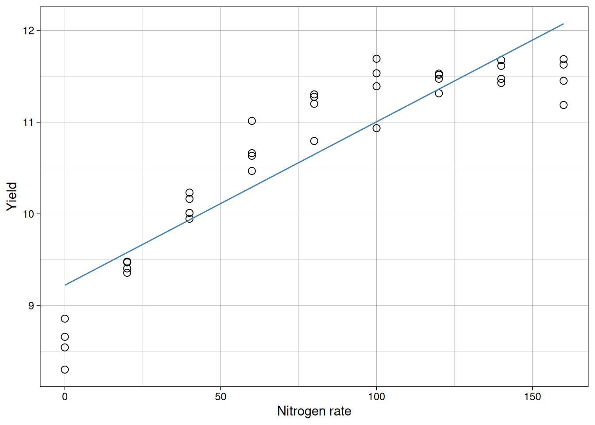
But look at the residuals:
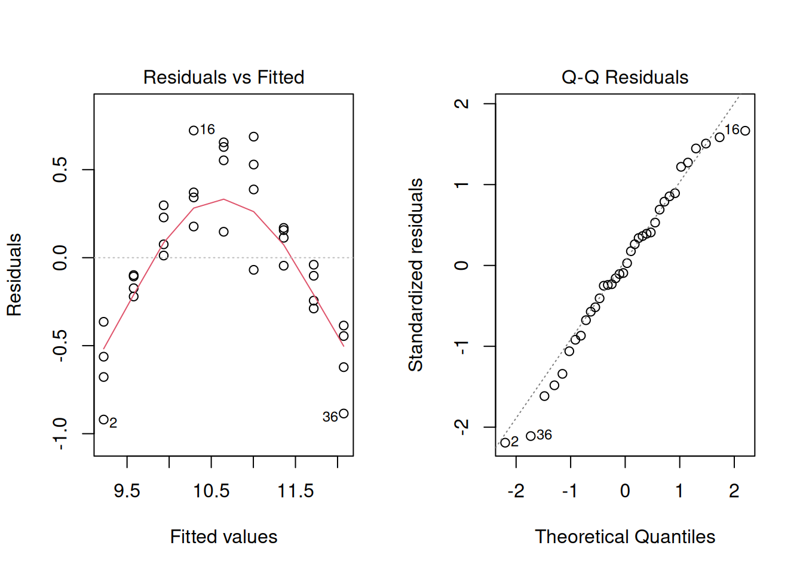
The residuals show a strong curved pattern. The line systematically underpredicts at low and high nitrogen, but overpredicts in the middle. A significant p-value and high \(R^2\) do not guarantee the model fits correctly. Only by inspecting residuals do we discover the true relationship is nonlinear (likely quadratic), and a straight line is inappropriate no matter how flat the summary statistics look.
Anscombe’s quartet: why plots matter
A classic reminder of why residual inspection matters comes from Anscombe (1973). He constructed four datasets that are, for all practical purposes, numerically identical:
- same means and variances of \(x\) and \(y\)
- same fitted line: \(\hat{y} = 3 + 0.5x\)
- same \(R^2 = 0.667\)
- same F-statistic and p-value
But when plotted, only one dataset shows a clean linear relationship. The others reveal curvature, a single influential outlier, and a perfectly collinear set interrupted by one extreme point.
This dataset is built into base R.
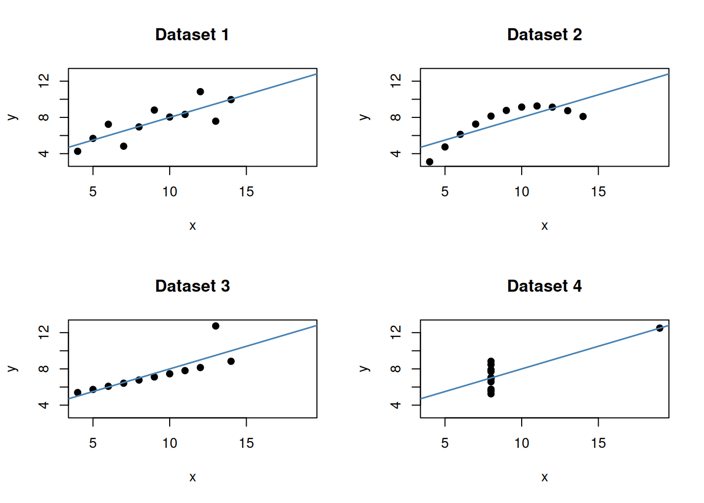
The takeaway is direct: identical numerical summaries can hide very different underlying structures. A high \(R^2\) and a significant p-value do not substitute for looking at the data. This is exactly why we always plot before and after fitting, and why the diagnostics in the previous section are not optional.
Extrapolation
Interpolation is prediction within the observed range of \(x\).
Extrapolation is prediction outside that range.
Extrapolation can be risky because the true relationship may change outside the sampled region.
In this example, we observed nitrogen rates from 0 to 67.2. Predicting at 40 is interpolation. Predicting at 130 is extrapolation.
The shaded region below marks the observed range. The green point is within it; the red point is well outside.
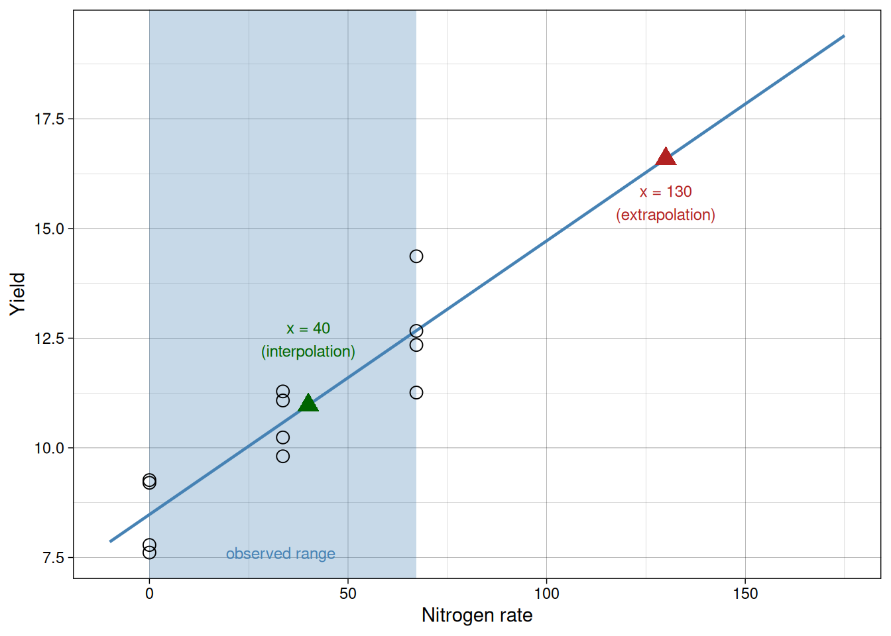
Common mistakes to avoid
- Treating correlation as proof of causation.
- Reporting a significant p-value without interpreting effect size.
- Interpreting a high \(R^2\) as proof the model is correct.
- Ignoring residual patterns because the slope is significant.
- Concluding the relationship is linear just because the slope is significant: a curved trend can produce a non-zero linear component and a significant p-value even when the straight-line model is wrong.
- Concluding there is no relationship just because the slope is non-significant: a curved relationship with zero linear slope will yield a non-significant p-value even though a real relationship exists. Always look at the scatter plot.
- Extrapolating far outside sampled values as if uncertainty stayed the same.
In practice, good interpretation combines all pieces of evidence: effect size, uncertainty, residual diagnostics, and biological plausibility.
Summary
In this module, we learned:
- Correlation quantifies association, not causation.
- Regression models directional relationships and supports prediction.
- The slope is the expected change in \(y\) per unit change in \(x\).
- Least squares fits the line by minimizing squared residuals.
- Significance of the slope can be tested with coefficient tests or ANOVA.
- \(R^2\) summarizes model fit.
- Diagnostics are essential to check whether a linear model is appropriate.
- Extrapolation should be approached cautiously.
The key conceptual shift in this module is moving from comparing groups to modeling relationships. This allows us not only to detect differences, but to quantify how variables change together in biologically meaningful ways, and to make calibrated predictions for values we did not directly observe.